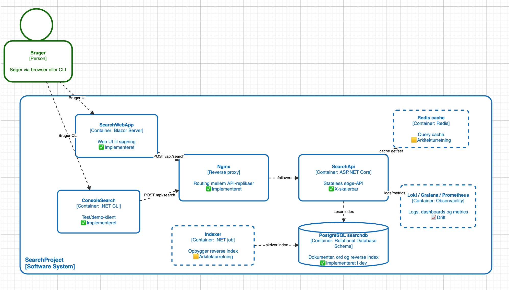
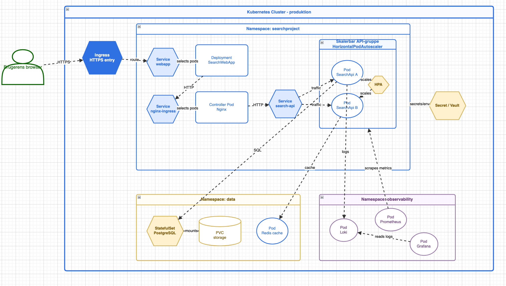

Scale out + stateless
Fejl i én instans må ikke stoppe søgningen
Hvis API'et er stateless, kan vi køre flere ens instanser og fordele trafik mellem dem.
Hos os: 2 API-replikaer bag Nginx og dokumenteret failover.
Vi skulle levere en søgeløsning, som er hurtig, driftbar og robust under fejl. Derfor arbejdede vi efter en enkel rød tråd: problem → valg → bevis.
Søgning skal svare hurtigt for gentagne queries og overleve instansfejl.
X-skalering, cache-komponent, observability og en realistisk database-retning.
Docker Compose med SearchWebApp, Nginx, SearchApi x2, Redis, Postgres, Indexer, Prometheus, Grafana og Loki.
Vi valgte principper, der gør løsningen hurtigere, mere robust og lettere at drive. Pointen er ikke at bruge mange principper, men at bruge de rigtige bevidst.
Hvis API'et er stateless, kan vi køre flere ens instanser og fordele trafik mellem dem.
Vi bruger Redis, så ofte gentagne queries kan besvares hurtigere end et nyt opslag i databasen.
Monitorering gør det muligt at forklare performance og fejl med data i stedet for mavefornemmelser.
/metrics, dashboards og logs i drift.Vi bruger modne standardkomponenter, så teamet kan fokusere på søgelogik og arkitekturvalg.
Arkitekturen er bevidst enkel at forklare: en søgning går gennem få tydelige trin, og hver komponent har ét klart ansvar.
Brugeren sender en søgning fra webapp eller anden klient.
Trafikken fordeles til en af to API-instanser.
API'et validerer requesten og prøver Redis først.
Ved cache miss læses data fra Postgres og caches til næste gang.
Indexer bygger og opdaterer søgedata, som API'et læser fra.

searchapi1 stoppes10 requests før stop, 40 requests mens searchapi1 er stoppet, 10 requests efter restart.
Under stop: 40/40 succes. Trafik blev serviceret af search-api-2 uden klientfejl.
Vi har N+1 på API-laget. En replika kan fejle, mens systemet fortsat svarer.
Testen sammenlignede cold-cache (flush før hvert request) med hot-cache (cache primet).
Monitorering betyder, at vi ikke skal gætte på om systemet virker. Vi kan se hastighed, fejl og driftstilstand mens løsningen kører.
Fortæller om svartid, belastning og fejlrate. API'et eksporterer metrics via /metrics.
Gør udvikling og drift synligt over tid, så tendenser og flaskehalse kan ses i Grafana.
Bruges når noget går galt, så vi kan se hvad der skete og hvor i flowet det skete.
Kubernetes-diagrammet viser ikke noget vi påstår er færdigt i dag. Det viser den driftsretning, løsningen naturligt kan vokse ind i, hvis den skal drives mere produktionstæt.
Arkitekturen er allerede delt i services, stateless API'er, ekstern cache og database. Derfor passer den naturligt til en Kubernetes-model.
Bedre håndtering af replikaer, services, health checks, deployment-strategier og mere moden drift på tværs af flere containere.
Vi kører ikke hele projektet i Kubernetes nu. Diagrammet viser retningen og de begreber vi forstår, ikke en færdig produktionsplatform.

API-laget kan skaleres, instansfejl kan håndteres, Redis giver målbar effekt, og systemet kan observeres i drift.
Kubernetes og fuld Z-skalering er en retning for videre arbejde, ikke noget vi påstår er færdigt nu.
Read replicas, stærkere health checks og mere moden deployment omkring databasen.